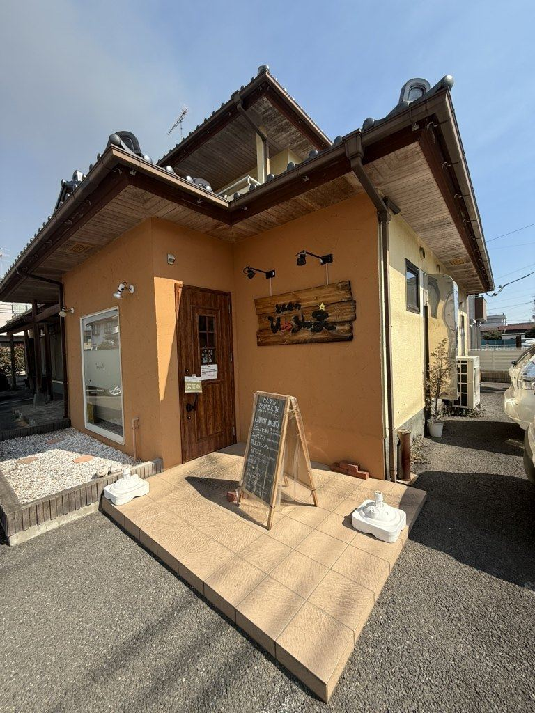

二代で、ひとつの厨房。

2014年4月5日、小山市城東に開店いたしました。店名の「ひかるん家」は、店主の名「ひかる」に「ん家（んち）」を添えたものです。
店主は和食の料理人として腕を磨き、この店を妻とともに家族で営んでまいりました。
2018年、洋食店で修行していた息子が店に入り、お品書きを一新しました。手作りのティラミスやプリン、カツ煮込みやビッグメンチ、特製のタレに漬け込んだ鶏のから揚げは、このときに加わった品です。
和食の手と洋食の手、ふたつの手で今日もお迎えいたします。